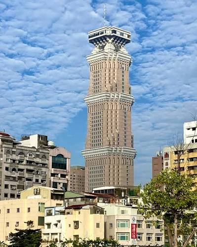

50 大樓

85 大樓

夢時代
91422111黃邵雍
探索港都最具代表性的三大建築景點
85 大樓 · 50 大樓 · 夢時代 — 見證高雄從工業港都蛻變為國際城市的時代縮影
222m · 50 層 · 1992 年完工
378m · 85 層 · 1997 年完工
12.1 萬坪 · 2007 年開幕

1980 年代，高雄正處於從重工業城市轉型為國際港都的關鍵時期。長谷集團 創辦人 鍾正光 在走訪美國、日本等先進國家後，深感高雄需要一座與國際接軌的現代化商辦大樓。1988 年，他宣布了一個大膽的計畫：在當時仍屬郊區的三民區民族一路與大順二路口，興建高雄第一座突破 200 公尺的摩天大樓。
這個選址在當時被視為一場豪賭——民族路一帶還是農田與低矮房舍，沒有人預料到這裡會成為日後的商業核心。然而鍾正光的遠見隨著 1992 年 大樓完工而獲得驗證。50 大樓正式名稱為「長谷世貿聯合國大樓」，但因地上 50 層的結構，高雄人更習慣親切地稱它為「50 大樓」。在 1997 年 85 大樓落成之前，50 大樓一直是高雄的天際線最高點。
長谷集團創辦人鍾正光宣布興建高雄最高摩天大樓
動工興建，選用當時先進的 SRC 複合結構
完工啟用，222 公尺成為高雄第一高樓
吸引大批外商與金融機構進駐，民族路商圈開始成型
85 大樓落成，50 大樓退居高雄第二高樓
仍為高雄重要商辦地標，民族路家具商圈核心建築
50 大樓的建築風格呈現典型的 1990 年代現代主義 美學——造型簡潔的長方體量體，外牆以深色玻璃帷幕搭配白色水平飾帶，線條乾淨俐落，展現當時商業建築追求的穩重感與國際化視野。這種「少即是多」的設計語言在今日看來仍不過時，具有經典的時代美感。
結構方面，50 大樓採用當時最先進的 鋼骨鋼筋混凝土（SRC） 構造，這項技術結合了鋼骨的韌性與钢筋混凝土的剛性，耐震性能遠優於傳統 RC 構造。頂樓設有 直升機停機坪，是當年高雄少數配備此設施的高層建築，反映了 1990 年代台灣經濟顛峰時期對頂級商辦設施的追求。大樓的 玻璃帷幕 採用反射隔熱玻璃，在台灣亞熱帶氣候下能有效降低室內溫度。
建築特色
城市規劃影響
50 大樓的落成標誌著高雄金融商貿的現代化起點。1990 年代初期，大批外商、金融機構、貿易公司進駐 50 大樓，使其成為高雄第一個國際級商辦聚落。大樓的成功也帶動了周邊民族路、大順路的商業蓬勃發展，形成今日的 民族路家具商圈（全高雄最大的家具集散地）與 大順路百貨廊帶（好市多、義享天地、悅誠廣場）。
對許多高雄人而言，50 大樓是「小時候記憶中的最高樓」，承載著學生畢業旅行、家庭出遊的城市記憶。大樓附近的愛河之心、科工館、河堤公園等景點，因為 50 大樓的指標性而串聯成深度旅遊路線。在 85 大樓出現之前，50 大樓就是高雄人心中的城市象徵。
民族一路及大順路天橋是最佳拍攝角度，尤其傍晚燈光亮起時
步行約 10 分鐘，浪漫情人橋、夜景絕美，是約會熱點
國立科學工藝博物館，大型互動展覽，適合親子同遊
步行 8 分鐘，集合百貨、美食、娛樂的大型商場
沿愛河畔的帶狀公園，適合散步、慢跑、野餐
民族路沿線聚集上百家具店，形成全高雄最大家具街
1980 年代末期，台灣經濟正值起飛，高雄作為國際商港亟需現代化商業空間。東帝士集團看準高雄轉型契機，於 1989 年 啟動 85 大樓開發計畫，委託以台北 101 聞名的 李祖原建築師事務所 操刀，目標直指台灣第一高樓，宣示高雄走向國際的決心。
然而興建過程並非一帆風順。1997 年亞洲金融風暴 重創台灣房地產市場，東帝士集團資金調度陷入困境，工程一度停擺。憑藉集團創辦人的堅持與銀行團支持，大樓最終克服萬難完成。1997 年落成時以 378 公尺的高度躍居台灣第一，直至 2004 年台北 101 完工後退居第二，但至今仍是 高雄最高的摩天大樓，地位無可撼動。
東帝士集團啟動開發，委託李祖原建築師事務所設計
正式動工，採用鋼骨結構與玻璃帷幕
完工啟用，成為台灣第一高樓，樓高 378 公尺
74 樓觀景台正式對外開放
台北 101 完工，85 大樓退居台灣第二高樓
仍為高雄最高建築、最具代表性的城市地標
85 大樓最標誌性的特色是其「高」字造型——由兩個矩形量體交錯堆疊而成。李祖原建築師巧妙地將漢字結構融入摩天大樓設計，既呼應城市名稱「高雄」，也傳達「向上發展、追求卓越」的精神。這種融合 東方文化符號 與 現代摩天大樓 的設計手法，後來也沿用於台北 101 的設計之中。
建築採用 鋼骨結構 搭配 深色玻璃帷幕，總用鋼量達數萬噸。結構工程充分考慮高雄的颱風與地震風險，採用 韌性抗彎矩構架 系統，能承受強風與地震力。大樓外觀在夜間有動態 LED 燈光秀，以藍、紫、金等色調妝點港都夜空，成為高雄夜景的代表畫面。
樓層功能分布
工程挑戰
85 大樓的落成不僅改變了高雄的天際線，更對城市的 商業版圖 與 觀光產業 產生深遠影響。大樓內的君鴻酒店（原金典酒店）曾是高雄頂級飯店的代名詞，吸引眾多國際商務旅客；74 樓觀景台則成為國內外旅客造訪高雄的必遊景點，累計參觀人次突破 數百萬。
三多商圈因 85 大樓的帶動而快速發展，新光三越、遠東 SOGO 等百貨陸續進駐，形成高雄最繁華的商業核心之一。大樓周邊房地產價格在完工後十年內上漲超過 200%，可見其對區域經濟的強大拉動力。
在文化層面，85 大樓早已超越單純建築物。每年 跨年煙火秀 以 85 大樓為核心，搭配高雄港灣景觀吸引數十萬人朝聖。大樓多次出現在電影《痞子英雄》、電視劇及音樂 MV 中，成為高雄無可取代的視覺符號。
360 度俯瞰高雄港、壽山、旗津及市區全景；建議傍晚造訪，一次飽覽日落與夜景
入夜後高雄港燈火與星空交融，觀景台設有大型落地窗，視野無遮蔽
三多路與自強路口為拍攝大樓全貌最佳位置；成功路橋可捕捉大樓與港區同框
每年 12/31 以 85 大樓為核心的港都煙火秀，最佳觀賞點為高雄展覽館前廣場
2000 年代初期，高雄市政府積極推動「多功能經貿園區」計畫，將前鎮區台糖糖廠數十公頃的閒置土地進行都市更新。統一企業集團看準南高雄的發展潛力與高雄港的國際門戶優勢，於 2002 年 啟動夢時代購物中心的開發案，歷時 5 年規劃、3 年興建，總投資金額超過 300 億元，是當時台灣規模最大的民間商業開發案。
2007 年 6 月開幕當天，湧入超過 50 萬人次，創下台灣單一購物中心單日人流紀錄！這個驚人的數字不僅證明了市場對南高雄商業發展的期待，也讓夢時代一舉成為亞洲最大的購物中心之一。夢時代的成功更帶動高雄的商業重心從北高雄（三多商圈）擴展至南高雄，前鎮區的房地產價格在開幕後三年內上漲超過 150%。
統一集團啟動開發案，選址前鎮區 29 期重劃區（原台糖糖廠）
動工興建，總樓地板面積達 12.1 萬坪
正式開幕，單日湧入 50 萬人次，創台灣紀錄
高雄輕軌規劃串聯夢時代，提升南高雄交通便利性
輕軌 C5 夢時代站通車，成為直達大門口的交通樞紐
南高雄最大生活娛樂中心，年客流量達數千萬人次
夢時代的建築設計以「海洋」為核心概念，深刻呼應高雄的港都身份。建築師從 鯨魚 的流線型身軀汲取靈感，外觀採用流線型波浪設計，搭配大面積玻璃帷幕引入自然光，白天時建築會隨著陽光角度呈現不同的光影變化。商場內部以 挑高中庭 為核心，形成寬敞明亮的購物動線，讓消費者感受到開放、舒適的空間體驗。
全館分為 藍鯨館（主要賣場）與 鯨魚館（停車場及部分設施），兩館之間以空橋相連，即使在雨天也能輕鬆往來。頂樓的「高雄之眼」摩天輪高 102.5 公尺，是高雄最高的摩天輪，也是全台少數設在購物中心屋頂的摩天輪之一，搭乘一圈約 15 分鐘。
館內設施
經濟效益
夢時代的出現徹底改變了南高雄的商業版圖。開幕後帶動周邊房地產價格大幅上漲，成功路、中華五路沿線陸續進駐各類商家與餐廳，形成新興商業聚落。統一集團更將夢時代作為旗下零售事業的旗艦據點，整合了統一超商、康是美、星巴克等關係企業資源，形成強大的品牌協同效應。
在文化層面，夢時代已超越購物中心的角色，成為高雄市民生活的重要場域。每年 跨年晚會 在時代廣場舉行，吸引數萬人潮參與；廣場經常有街頭藝人表演、文創市集、主題展覽。頂樓摩天輪更成為情侶約會、婚紗拍攝的熱門景點，是高雄人共同的城市記憶。
102.5m 屋頂摩天輪，俯瞰高雄港、旗津及市區全景，夜晚燈光秀絢麗奪目
匯集各大國際品牌、服飾、生活用品，一站滿足購物需求
戶外大型廣場，經常舉辦演唱會、文創市集、展覽等活動
特色書店與文創空間，融合閱讀、設計與生活美學
湯姆熊歡樂世界、玩具反斗城，親子同樂的好去處
商場部分區域可眺望高雄港，夕陽時分景色絕佳
| 項目 | 🏩 85 大樓 | 🏚 50 大樓 | 🎉 夢時代 |
|---|---|---|---|
| 完工年份 | 1997 | 1992 | 2007 |
| 高度 / 規模 | 378 公尺 | 222 公尺 | 12.1 萬坪 |
| 樓層 | 地上 85 | 地上 50 | 地上 7 |
| 結構 | 鋼骨 + 玻璃帷幕 | SRC 鋼骨鋼筋混凝土 | 鋼骨 + 玻璃帷幕 |
| 建築師 / 開發商 | 李祖原 · 東帝士 | 長谷集團 | 統一企業 |
| 當時最高紀錄 | 💎 台灣第一（1997–2004） | 💎 高雄第一（1992–1997） | 💎 亞洲最大購物中心 |
| 主要用途 | 商辦 · 觀景 · 住宅 | 商辦 · 展覽 · 商旅 | 購物 · 娛樂 · 餐飲 |
| 觀景設施 | ✓ 74樓觀景台 | ✗ 未開放 | ✓ 頂樓摩天輪 |
| 特殊設施 | 雙層電梯 · TMD阻尼器 | 屋頂直升機停機坪 | 屋頂摩天輪 · 透明車廂 |
| 交通核心 | 三多商圈站 (R8) | 後驛站 (R12) | 凱旋站 (R6) + 輕軌 |
| 周邊商圈 | 三多商圈 · 自強夜市 | 民族路家具街 · 大順路 | 前鎮 · 成功路 |
| 夜間景觀 | ⭐⭐⭐⭐⭐ | ⭐⭐⭐ | ⭐⭐⭐⭐ |
這三大地標的完工時間恰好見證了高雄天際線的「三級跳」：
高雄最高建築為長谷世貿大樓（50 大樓前身）周邊的 10–20 層樓建築，天際線相對低平
222 公尺一舉突破 200 公尺門檻，高雄正式進入摩天大樓時代，民族路商圈隨之崛起
378 公尺將高雄天際線推至頂點，成為台灣第一高樓，三多商圈取代民族路成為新商業核心
商業重心從「垂直摩天大樓」轉向「水平購物中心」，南高雄商業版圖正式成形
輕軌串聯三大地標，高雄形成「北 85 · 中 50 · 南夢時代」的空間格局
這三大建築分別代表了高雄在不同階段的發展重點：1990 年代的工業轉型、1997 年的國際化高峰、2007 年後的消費升級與生活品質追求。
85 大樓 — 後現代主義
李祖原將漢字「高」融入摩天大樓設計，屬於後現代主義的「文化符號建築」路線。兩個矩形量體的交錯堆疊不僅是結構創新，更是文化宣言。夜間燈光秀進一步強化了建築的可辨識性。
50 大樓 — 現代主義
簡潔的長方體造型、乾淨的水平與垂直線條，50 大樓是典型的 1990 年代現代主義商業建築。它不追求造型的誇張，而是以 比例、質感、細節 取勝，展現了現代主義「形式追隨功能」的設計哲學。
夢時代 — 流線型商業建築：以海洋生物為靈感的流線造型，大面積玻璃帷幕與波浪形屋頂，強調 動感、通透、體驗，反映 2000 年代購物中心從「購物場所」轉向「體驗場所」的趨勢。
從 74 樓俯瞰高雄港、壽山、旗津，以港都全景展開美好一天。建議提早前往，避開人潮。
逛新光三越、遠東 SOGO，順路到自強夜市品嚐南豐滷肉飯等在地早餐。
成功路海產粥、老牌木瓜牛乳，體驗高雄港都的海味。
搭乘捷運至後驛站，步行至民族一路欣賞 50 大樓外觀，在天橋上取景拍照。
步行約 15 分鐘至國立科學工藝博物館，適合親子或對科學有興趣的旅客。
漫步愛河畔，在浪漫情人橋欣賞午後陽光灑落河面的美景。
搭乘輕軌至 C5 夢時代站，逛藍鯨館、誠品生活，採購伴手禮。
饗食天堂自助餐、瓦城泰式料理或 B1 美食街，豐儉由人。
搭乘摩天輪欣賞高雄夜景，港都燈火盡收眼底，為一天劃下完美句點。
| 時段 | 活動 | 交通方式 | 花費時間 |
|---|---|---|---|
| 09:00–10:00 | 85 大樓觀景台 | 捷運 R8 | 1 hr |
| 10:00–11:30 | 三多商圈 + 自強夜市 | 步行 | 1.5 hr |
| 11:30–12:30 | 成功路海鮮午餐 | 步行 | 1 hr |
| 13:00–14:00 | 50 大樓建築拍攝 | 捷運 R12 | 1 hr |
| 14:00–16:00 | 科工館 | 步行 | 2 hr |
| 16:00–17:00 | 愛河之心 | 步行 | 1 hr |
| 17:00–18:30 | 夢時代購物 | 輕軌 C5 | 1.5 hr |
| 18:30–19:30 | 夢時代晚餐 | 館內 | 1 hr |
| 19:30–20:30 | 高雄之眼摩天輪 | 館內 | 1 hr |
夜間建築部 × 網頁設計 — 跨領域學習的實踐
很高雄學校安排這種跟上時代的課表在夜間部，讓我在夜間建築部的同時也能學到平時接觸不到的領域！
從建築結構、都市發展到前端網頁技術，跨領域的學習讓視野更開闊。